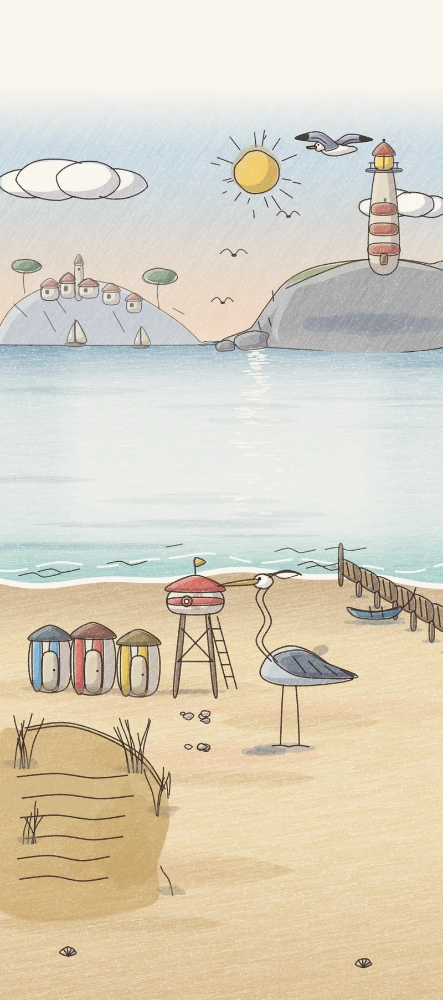
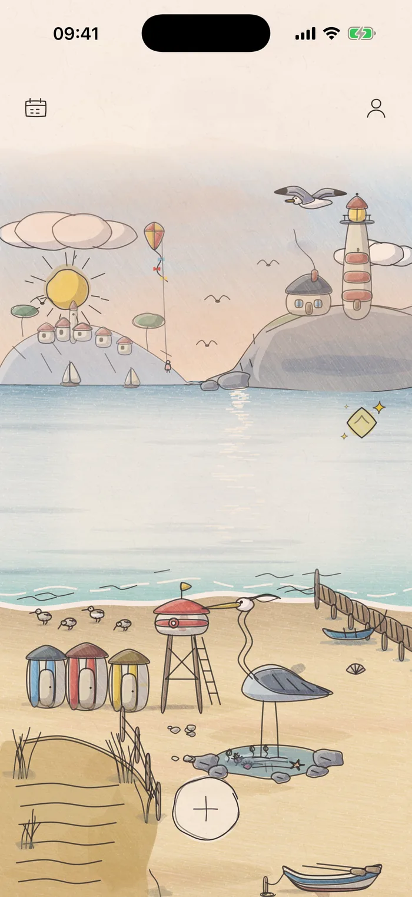
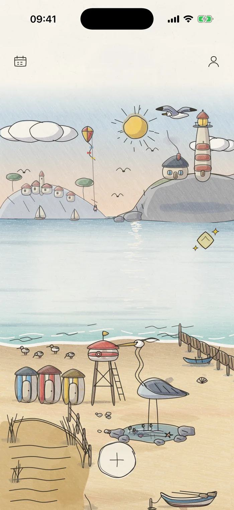
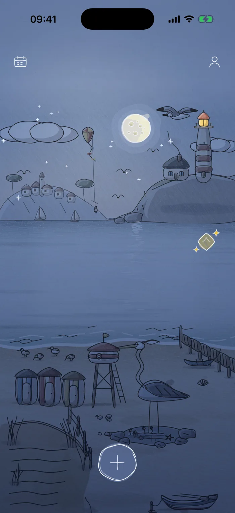
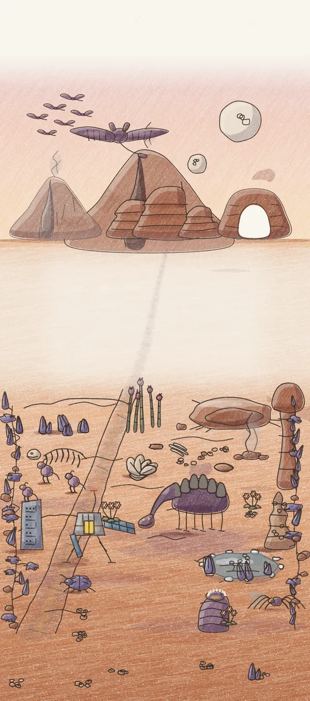

un objetivo al día.
no una lista: solo uno, el que llevas demasiado tiempo posponiendo.


mantén pulsado el círculo.
para quien lleva demasiado tiempo posponiendo.
para quien tiene una lista larga y nunca empieza. 1thing te hace elegir un solo objetivo, pequeño, para hoy.
deja de posponer.
un objetivo al día es lo bastante pequeño para empezar de verdad.
ve lo que has hecho.
cada objetivo que completas se queda: en el cuadro, en el calendario, en la pared del estudio.
sin culpa.
si te saltas un día, no pierdes nada. el cuadro te espera.
un momento tuyo, cada día.
un gesto tranquilo, un dibujo que crece, un compañero que te espera.
en tu estudio vive un compañero.
te espera allí cada día, mientras pintas.
elige quién.
tu estudio.
la habitación donde pintas, toda tuya. crece contigo: cada objetivo deja una marca, cada cuadro terminado encuentra su sitio en las paredes.
una marca por cada objetivo completado.
los cuadros terminados, colgados en las paredes.


tu compañero, que te espera.
cortinas, plantas, lucecitas, alfombras: más de 40 cosas para elegir.
decóralo a tu gusto.
paredes, cortinas, plantas, lucecitas, alfombras: más de 40 cosas.
cómo funciona.
elige un objetivo. solo uno, para hoy.
así se deja de posponer: un pequeño paso cada vez.
cuando lo completes, mantén pulsado el círculo.
hasta que se cierre. es tu señal de hecho.
cada objetivo que completas pinta un trozo del cuadro.
con 30, el cuadro está terminado. si te saltas un día, te espera.


el cuadro cambia con tu día.
el cuadro toma la luz de la hora en que completas tu objetivo.
- amanecer

- día

- atardecer

- noche

cada día hecho se queda.
en el calendario encuentras los 30 trozos del cuadro. tocas un día y vuelves a leer el objetivo, y la nota que dejaste.
toca un día hecho para volver a leerlo.

por qué funciona.
1thing se basa en ideas que la investigación lleva mucho tiempo estudiando.
anotar los progresos ayuda a alcanzar los objetivos.
un metaanálisis de 138 estudios: quien sigue sus progresos alcanza sus objetivos más a menudo, sobre todo si los anota.
en 1thing: el cuadro y el calendario.
Harkin y colaboradores, Psychological Bulletin, 2016los pequeños avances cuentan.
en unos 12.000 diarios de trabajo, los mejores días eran los de un pequeño avance.
en 1thing: un objetivo pequeño, cada día.
Amabile y Kramer, The Progress Principle, 2011saltarse un día no rompe un hábito.
siguiendo a 96 personas durante 12 semanas, saltarse una ocasión no cambió de forma apreciable la formación del hábito.
en 1thing: si te saltas un día, el cuadro te espera.
Lally y colaboradores, European Journal of Social Psychology, 2010perdonarse ayuda a posponer menos.
los estudiantes que se perdonaron por haber pospuesto el estudio de un examen pospusieron menos el siguiente.
en 1thing: sin culpa, sin rachas que perder.
Wohl, Pychyl y Bennett, Personality and Individual Differences, 2010
son estudios sobre las ideas en las que se basa la app, no sobre 1thing.
y cada día, una ayuda.
-
en los días vacíos, el objetivo adecuado te lo busco yo.
sé lo que te importa: te lo propongo, tú eliges.
-
icono y widgets a tu gusto.
ocho iconos, y tu objetivo en la pantalla de inicio, dentro del cuadro.
-
un recordatorio al día.
a la hora que elijas, con el tono que prefieras.


¿qué pintamos ahora?
cuando un cuadro está terminado, lo cuelgo en tu estudio y empieza otro.





un objetivo al día.
para iPhone.